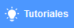
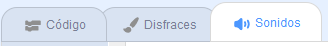
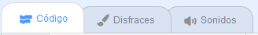
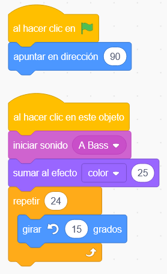
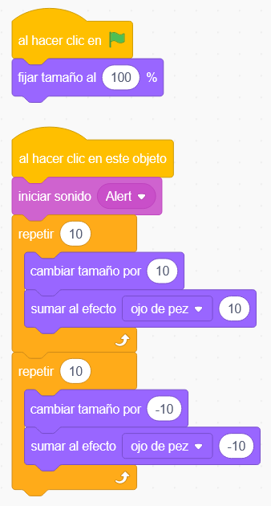
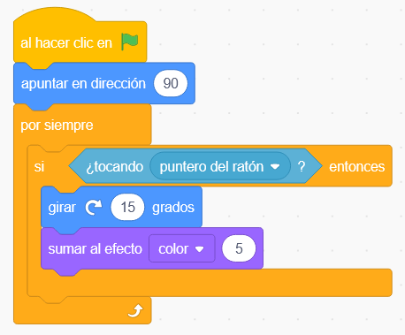
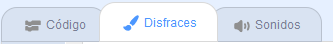
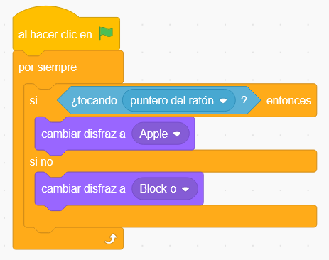

5. Animar nombre¶
En esta práctica vamos a mostrar en pantalla un nombre con efectos especiales en sus letras. Cuando el ratón pase sobre cada letra, esta mostrará un efecto especial.

Iniciamos el editor de Scratch.
Pulsamos el botón idioma
 en la barra
superior y elegimos Español.
en la barra
superior y elegimos Español.Pulsamos el botón de tutoriales  y luego el botón de "Animación".
Seleccionamos el tutorial "Animar un nombre" y lo visualizamos.
En este tutorial veremos el funcionamiento básico del programa.
Borramos el objeto gato presionando sobre el icono del cubo de basura.

Después vamos a seleccionar un fondo para nuestro nombre. En el botón seleccionar fondo escogemos el que más nos guste.
A continuación vamos a seleccionar varias letras con nuestro nombre pulsando seleccionar objeto
 y luego en la pestaña "letras" escogemos las letras
adecuadas con el estilo que deseemos.
y luego en la pestaña "letras" escogemos las letras
adecuadas con el estilo que deseemos.Por último arrastramos las letras en la pantalla con el ratón y las colocamos en orden para formar un nombre.
Ahora vamos a programar las letras para que tengan efectos especiales. Al hacer clic con el ratón sobre la primera letra, emitirá un sonido y cambiará de color mientras gira una vuelta completa.
Primero seleccionamos la primera letra y pinchamos en la pestaña de sonidos . En el botón seleccionar sonido escogemos uno que sea breve y nos guste.
Después, en la pestaña de código  añadimos este programa.
Pulsamos la bandera verde
 para probar el funcionamiento del programa.
para probar el funcionamiento del programa.En la segunda letra vamos a programar que al hacer clic sobre ella, aumentará de tamaño con el efecto de ojo de pez como si se estuviera inflando y luego volverá a su tamaño inicial. También añadiremos un nuevo sonido a los demás efectos.
Pulsamos la bandera verde
para probar el funcionamiento del programa.En la tercera letra, vamos a mostrar efectos siempre que el ratón pase por encima, sin necesidad de hacer clic. Esto se consigue con el sensor "¿tocando puntero del ratón?".
Al pasar el puntero sobre la letra vamos a hacer que cambie de color mientras gira.
Un bucle "por siempre" estará comprobando todo el tiempo si en algún momento el ratón toca la letra y en ese momento se aplica el efecto especial.
Pulsamos la bandera verde
para probar el funcionamiento del programa.Por último vamos a programar la cuarta letra para que cambie su disfraz por una fruta cuando pase el ratón por encima.
Primero debemos seleccionar la letra deseada e ir a la pestaña de disfraces , donde vamos a añadir el disfraz de una fruta.
A continuación en la pestaña código añadimos el siguiente programa que intercambia los disfraces cuando el ratón pasa por encima.
Pulsamos la bandera verde
para probar el funcionamiento del programa.
{kind=link}
{kind=link}
{kind=link}
{kind=link}
Retos¶
Completa el nombre con más letras que tengan efectos especiales basados en los que se han visto en este tutorial.
Recuerda que puedes aplicar efectos cuando el ratón
- Clic sobre la letra.
- Pasar por encima de la letra.
Los efectos que se pueden aplicar son.
- De sonido.
- De tamaño.
- De movimiento o de giro.
- De efectos gráficos (color, ojo de pez, remolino, pixelar, etc.)
- Cambiar disfraz.
- Combinar varios efectos a la vez.